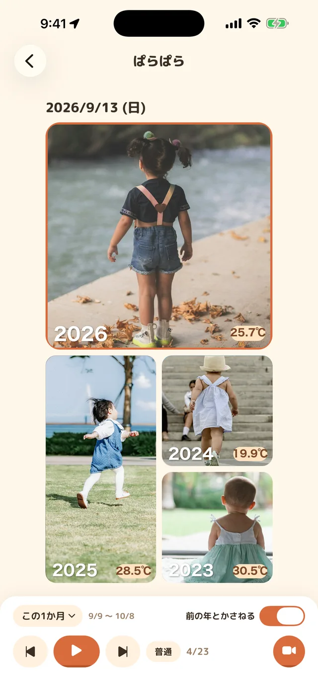
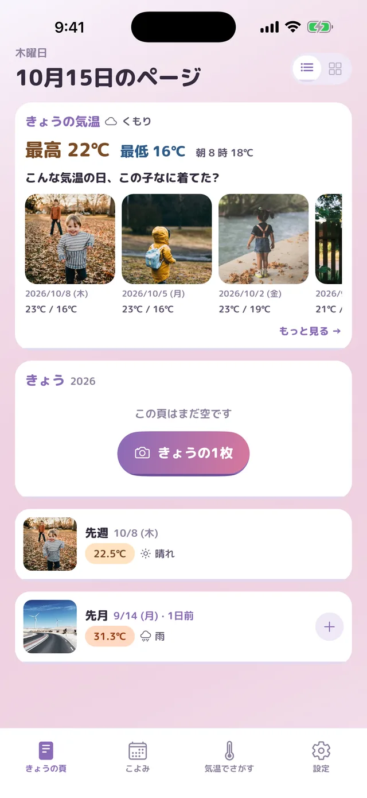
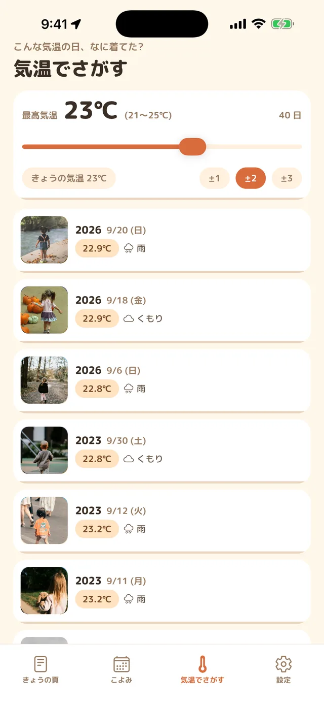
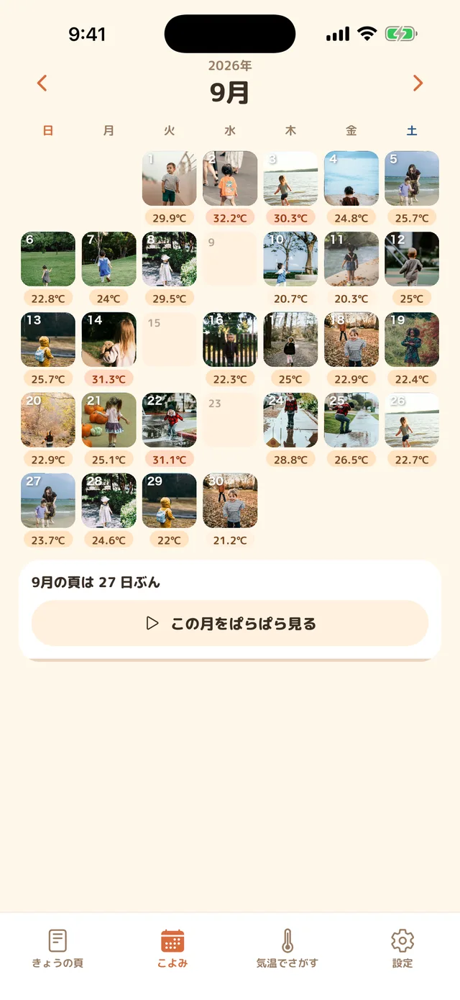
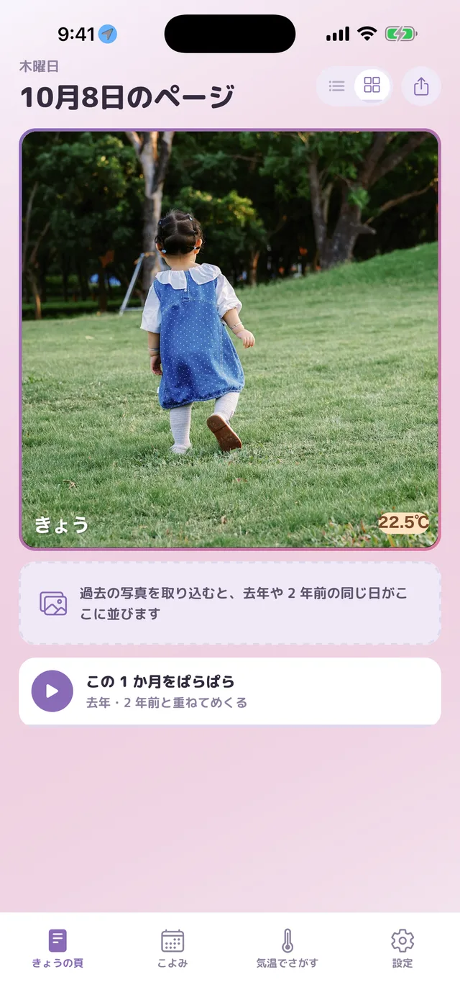

気温つき · 3 年の写真日記
去年の今日、
この子
なに着てた?
1 日 1 枚の写真に、その日の気温と天気が自動で付く 3 年日記。去年・2 年前の同じ日と重ねてぱらぱらめくれて、気温で過去の写真をさがせます。入れたら、まず取り込み。数分で去年の今日が並びます。
無料(一部の機能は買い切りの Pro)。日本語・英語・中国語・韓国語。


けさは半袖?
長袖?
ホームのいちばん上に、きょうの最高・最低・朝 8 時の気温と、同じくらいの気温だった日の写真が並びます。夕方からは、あしたの気温に切り替わるので、前の晩のうちに服を決めておけます。
0 歳、1 歳、2 歳、
3 歳の同じ日。
きょうの写真と、去年・2 年前の同じ日の写真を並べたまま、1 日ずつ同時にめくります。好きな日から 1 週間 / 1 か月 / 3 か月 / 1 年ぶん。子どもの成長や庭の季節の移り変わりが、数秒で見比べられます。
この気温の日、
なに着てた?
今日と同じくらいの気温だった日の写真を、これまでの記録から並べて見られます。毎朝の服選びや衣替えの目安に。

ひと月を、
ひと目に。
きょうの 1 枚を撮るか選ぶだけ。場所・気温・天気は自動で付きます。きょう・先週・先月・去年・2 年前の同じ日が一枚の頁に。その日に写真が無ければ、前後 3 日でいちばん近い日を出します。

過去の写真から、
始められる。
カメラロールの過去の写真をまとめて取り込み、当時の気温を後から付けます(無料で 2 年分)。始めた日から 3 年日記になります。スクリーンショットは選びません。

ほかにも。
「何の日記?」で 1 枚を選ぶ(Pro)
子ども・ペット・空、または見本に似たもの(ビオトープや鉢植え、いつもの景色など)を選ぶと、取り込みのときにその日の写真の中からテーマに合う 1 枚を選びます。写真の中身の判定は端末の中だけで行います。
動画や画像にして家族に送る
ぱらぱらを、画面で見ているまま(前の年とかさねて・速さも)動画にして、LINE などで送れます。1 年ぶんでも 5 分に収めます。きょうや好きな日の頁を、去年・2 年前と並べた 1 枚の画像にもできます。
前にここに来たとき
旅行先の頁には、同じ場所に前に来たときの頁が並びます。「前に来たときは、こんなに小さかったね」がすぐに見られます。家の近くなど、いつもの場所では出しません。
テーマカラーを選べる
日記の表紙を選ぶように、9 色からアプリの色を選べます。朱・若葉・海は無料、山吹・藤・桜・栗・墨・夜はグラデーションの Pro の色で、共有する画像や動画もその色になります。
写真は端末の中だけ
アカウント登録は不要。写真と記録は端末内にだけ保存され、外部のサーバーには送られません。
こんな方に。
写真をクラウドに置いている場合
かさね日記が取り込めるのは、端末の写真ライブラリにある写真です。機種変更のあとや、容量を空けるために端末から消したあとは、昔の写真が Google フォトや Amazon Photos にしか無いことがあります。そのときは、先にそれぞれのアプリで端末にダウンロードしてから取り込んでください。全部でなくても、子どもや植物など残したい写真だけで大丈夫です。どちらのアプリも、人物や「花」などのキーワードで写真を絞り込めます。
iCloud 写真(iPhone)
そのままで大丈夫です。「iPhone のストレージを最適化」をオンにしていても、写真ライブラリに撮影日と場所が残っているので取り込めます。
Google フォト
人物やキーワードで検索してから、写真を長押しして選び、そのまま指でなぞるとまとめて選べます。メニューの「ダウンロード」で端末に保存してください。撮影日と場所はダウンロードしても残ります(iPad・Android で確認済み)。
Amazon Photos
人物やキーワードで絞ってから写真をまとめて選び、「ダウンロード」で端末に保存してください。Android では撮影日と場所が残ることを確認しています。
ダウンロードしたら
かさね日記の 設定 →「過去の頁を取り込む」の「取り込みを開く」から、「取り込みを開始」を押してください。すでに記録がある日はそのままで、空いている日だけが埋まります。2 年分なら無料で取り込めます。取り込んだあとは、ダウンロードした写真を端末から消してもかまいません(かさね日記には縮小版が残ります)。
よくある質問
写真はどこに保存されますか?
すべて端末の中だけに保存されます。外部のサーバーには送られません。「何の日記?」で写真の中身(人の顔や犬・空など)を見るときも、判定は端末の中だけで行います。アプリを削除すると写真と記録も消えます。
気温はどこから取っていますか?
Open-Meteo の天気データを使っています。位置は約 10km の精度に丸めてから問い合わせます。
過去の写真の気温が付きません
写真に位置情報がない場合、推測で気温を付けることはしません。頁の詳細で場所(ホーム地点か地名)を選ぶと、その日の気温が付きます。
昔の写真が取り込めません
昔の写真が Google フォトや Amazon Photos にしか無いのかもしれません。写真をクラウドに置いている場合をご覧ください。
去年の同じ日に写真がありません
前後 3 日以内でいちばん近い日の写真を「2 日前」のように表示します。それも無い場合は空の頁になります。
データを全部消したい
設定の「すべて削除」か、アプリの削除で消えます。
作った人
急に寒くなった朝、子どもに長袖と半袖のどちらを着せるのか、毎年わからなくなっていました。去年の今ごろの写真と、その日の気温がひと目でわかればいいのに、と思って作ったのが かさね日記 です。Google フォトの「〇年前の今日」が、たまにではなく毎日見られたら、という思いもありました。
使ってくれた方やテストをしてくれた方の声で、少しずつ直しています。作った理由と、直したことは こちら(英語)に書きました。
入れたら、まず取り込み。
数分で去年の今日が並びます。